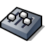
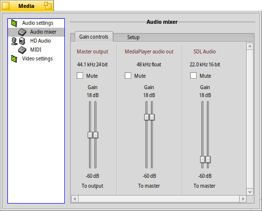

| インデックス |
|
オーディオ設定 オーディオミキサー HD オーディオ MIDI ビデオ設定 |
メディア (Media)
| Deskbar: | ||
| 場所: | /boot/system/preferences/Media | |
| 設定ファイル: | ~/config/settings/Media/* ~/config/settings/System Audio Mixer ~/config/settings/MediaPrefs Settings - パネルのウィンドウ位置を保存します。 |
Media プレファレンスはシステムのオーディオとビデオ設定を制御します。それらは、ボリュームの設定のような日常のタスクから殆どのユーザーが必要としないとても低レベルの調整まで及びます。様々な設定はカテゴリー毎にグループ化されています。
 オーディオ設定
オーディオ設定

コンピューターがひとつ以上のオーディオインターフェースを備えている場合、、 および使用する を選択できます。まれに、何かがシステムのオーディオ/ビデオを乱すときは、 を試してください。
チェックマークで できます。これは Deskbar トレイに小さなアイコンを追加します。

トレイアイコン上で左クリックすると、音量スライダーがポップアップして、マスター主力を制御します。もう一つの方法として、アイコン上でマウスホイールを直接使うことでも音量を変化します。上図からおわかりのように、右下にある小さなレプリカントハンドル からスライダーを埋め込めます。例としてデスクトップ上にできます。
右クリックで 、 への近道となり、を起動するメニューを開きます。
オーディオミキサー
オーディオミキサーによって、現在動作中の複数アプリケーションの出力のようなシステム内の異なったオーディオストリームの音量を制御できます。
ここでは、マスター出力と現在実行中のメディアプレイヤーおよび SDL オーディオを使用しているゲームの音量スライダーが見られます。これらのスライダーで、たとえばゲームの音がメディアプレイヤーのプレイリストからの音楽をかき消さないように音声出力をミックスできます。
スライダーの '2つのつまみ' は、左右のステレオを表現しています。通常は同時に動きますが、右マウスボタンでどちらかのつまみを動かすだけでバランスを調節できます。
チェックマークを使って、音声ストリームを します。
タブは、おもに低レベルの設定を提供します:

これらすべての低レベルの調整パラメーターは — Haiku が箱から出したオーディオハードウェアを充分サポートしない場合のみ試みるでしょうが — 2，3 の興味を引くであろう設定があります。
| クリッピングを避けるために、ヘッドルームをもう少し追加します。 | ||
| タブの音量スライダーに、'2重のつまみ (double-knobs)' に代わってバランススタイダーを追加します。 | ||
| ひとつのチャンネルをひとつ以上の他のチャンネルに割り当て、音量を調整するためのタブを開きます。例として、左出力を左前、左後、中央に割り当てて異なる音量を設定できます。 | ||
| (低 CPU 使用率およびレイテンシ) と (わずかに高い CPU 使用率とレイテンシ) へのオプションがあります。 |
HD audio (名称はハードウェアで決まります)
オーディオミキサーが Haiku を流れる様々なオーディオストリームを扱うのに対して、これは物理的な入出力を扱います。

３ つのタブがあります:
| および を設定します。 | ||
| スピーカーやヘッドホンの出力レベルを設定します。 | ||
| line-in とマイクロホンの入力レベルを設定します。 |
これらのハードウェアレベルの設定は少し適当に見えることを言わなければなりません……
Haiku はハードウェアを調べて、それが返すものを理解するように務めます。同じラベルなどのついた重複するスライダーを見るかもしれません。求めるスライダーを見つけるために少し試して見る必要があるでしょう。
MIDI
MIDI 設定はインストール済のサウンドフォント (楽器の定義) をすべて表示します。好きなものをひとつクリックするだけです。エントリーをダブルクリックすると親フォルダーを開きます。

HaikuDepot 内でわずかなサウンドフォントが見つかります。それらはインストール後自動的に表示されます。ウェブからダウンロードしたサウンドフォントは手動で /boot/system/non-packaged/data/synth/ (または同等の Home 階層。ファイルシステムレイアウトのトピックを参照ください) へ移動する必要があります。
ビデオ設定

ハードウェアとドライバーのサポート次第で、 および.を選択できます。
オーディオ設定と同様に、 をクリックすると奇妙な問題を修正できるかもしれません。